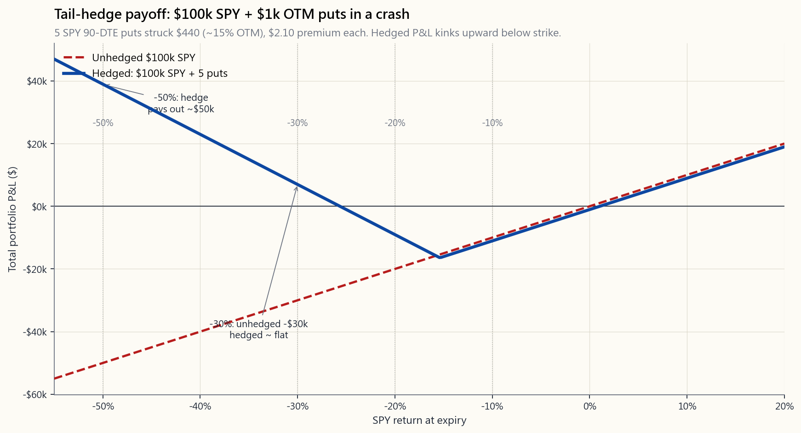
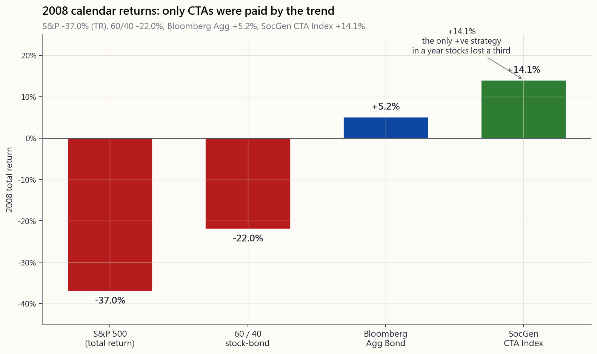

Week 47: Tail Risk — Universa, Put Protection, and CTAs as Long-Vol Diversifiers
1. Why This Is Important
A black swan, in the way the textbook teaches it, is a 5σ event: five standard deviations below the mean of a normal distribution. Under the bell curve, that occurs once every 14,000 years. The S&P 500 had three of them between 1987 and 2020 alone.
Markets do not deal in normal distributions. The 1987 single-day −22.6% close was, on the parametric assumption financial economists were teaching that morning, a once-in-10⁵⁰-year event — many orders of magnitude longer than the age of the universe. It happened on a Monday. The −12.0% single-day move on March 16, 2020, was a "5.6σ" print. The Volmageddon −115% one-day VIX-product implosion of February 5, 2018 was — under the model that priced those products — a once-in-the-life-of-the-sun event. That makes four lifetimes of the universe in three decades, all of which the same investors lived through.
Tail risk is the part of the distribution the textbook erases. This lesson is about the small slice of the portfolio that is designed to be paid when the textbook erasure shows up.
You need to understand tail-risk hedging for four reasons:
requires up 100% to get back. Down 75% needs up 300%. A portfolio that sidesteps the worst 5% of months over a long horizon ends up, mechanically, at a higher terminal wealth than one that earns a slightly higher mean return without the protection. Tail-risk hedging is a way to manufacture that arithmetic — buy the right to sell at a price that only matters when prices have collapsed.
normal regimes, stock-bond, US-EM, and value-growth correlations are moderate. In a crisis they spike toward +1. The 60/40 you read about in Week 4 lost roughly 22% in 2022 because the diversifier ran out of negative correlation. Tail hedges are the only negatively-convex sleeve that gets more negatively correlated the worse the loss — exactly the property that fails in everything else.
but rare.** This is the barbell at the portfolio level. Spend a known small drag — 50 to 150 basis points per year — for a very large unknown payoff in a crash. The mirror of selling premium (Weeks 26–30): there, you collect a known small premium for a known small risk and one big tail. Tail hedging is the buyer side of that same trade. The underlying claim — the volatility tail wags the dog — is that the few crash days dominate the return distribution, so paying to be on the right side of those days is rational even if the carry hurts.
vol alternative.** Trend-followers do not buy puts. They go short on the way down by following the trend signal. In 2008 the SocGen CTA Index returned roughly +14% while the S&P 500 lost 38% and a 60/40 lost 22%. The mechanism is different — a long straddle synthesised from many trends rather than a literal option — but the convex-payoff shape in a crash is similar. That is why allocators pair CTAs with stocks the same way they would pair OTM puts with stocks: as a long-vol diversifier that earns very little in calm years and rescues the portfolio when correlations break.
2. What You Need to Know
2.1 What "Tail" Actually Means in Markets
The 1928–2024 daily S&P return distribution is not normal. It is fat-tailed — leptokurtic in the technical language, kurtosis around 20+ vs. 3 for the bell curve. The tail count is not abstract. Using daily data:
- 3σ days (about ±3% on the day): Normal distribution predicts
- 5σ days: Normal predicts one every 14,000 years. Observed:
- 10σ-equivalent days like 1987 or March 16, 2020: Normal
Because the empirical tail is much heavier than the parametric tail, two things follow. First, any model that uses normal distributions for risk — VaR, Sharpe ratios, CAPM-based pricing — systematically underprices crash risk. Second, the actual expected dollar contribution of those tail days to the long-run portfolio is not small. A handful of −10% days dominate decades of average returns. The tail wags the dog.
2.2 The Cost-of-Insurance Tradeoff
The classic tail hedge is an out-of-the-money put on the index. On April 2026, with SPY trading near $520, the rough quotes for a 90-day put are:
| Strike | % OTM | Premium ($) | Premium / Notional | Payout if SPY = $364 (−30%) |
|---|---|---|---|---|
| $500 | 4% | $9.30 | 1.79% | $13,600 / contract |
| $470 | 10% | $4.50 | 0.96% | $10,600 / contract |
| $440 | 15% | $2.10 | 0.48% | $7,600 / contract |
| $400 | 23% | $0.65 | 0.16% | $3,600 / contract |
| $360 | 31% | $0.20 | 0.06% | $0 / contract |
(Black–Scholes at σ = 19%, r = 4.3%, q = 1.3%.)
The 15% OTM put costs about 0.48% of notional for a 90-day window — call it ~2% of notional per year if rolled quarterly. In a crash to −30%, $1 of premium turns into roughly $36 of payout (a ~36× MOIC on the hedge sleeve), which on a 50bps allocation translates to about +18% on the whole portfolio.
But that 2%/year drag in normal years is what kills most retail attempts at this. Spend 2% protecting against an event that happens once a decade and you are −20% cumulatively versus the unhedged stock by the time the event arrives. That is why Universa's framing is different: spend less (50–150bps/yr) on deeper-OTM strikes that are cheap in normal times but explode in convexity in a crash.
2.3 The Universa-Style Architecture
Universa Investments — Mark Spitznagel's firm, with Nassim Taleb as advisor — popularised what they call the *capital-efficient tail hedge*. The architecture, as publicly described:
- Hedge size: 0.5% to 2% of NAV per year, depending on regime.
- Strikes: deep OTM (typically 25–35% OTM on the index).
- Tenor: rolling, weighted toward the 1- to 3-month part of
- Behaviour in normal regimes: cost is a slow drag — most
- Behaviour in a crash: the gamma profile of deep-OTM puts
The chart below shows the geometry on a hypothetical $100,000 S&P 500 position with a $1,000 quarterly tail-hedge budget. In a −30% scenario, the unhedged $100k loses $30k; the $1k put-hedge sleeve, sized at 5–10% OTM strikes rolling at quarterly horizons, returns roughly 25× to 50× — turning a −$30k drawdown into a small positive or near-zero combined P&L.

The tradeoff to internalise: every quarter the market does not crash, that $1,000 evaporates. Annualised, you are giving up 4% on the hedge sleeve, or roughly 1% of the total portfolio. That is the price of carrying the convex insurance. The empirical question is whether that 1%/year drag is recouped — and then some — in the crash that historically arrives every 7–10 years.
2.4 CTAs and Managed Futures as Long-Vol Without the Premium Bleed
A second, structurally different way to be long the tail is to be long trend. Managed-futures programmes — sometimes called CTAs, for Commodity Trading Advisors — run systematic trend-following across roughly 50 to 200 liquid futures markets: equity indices, rates, currencies, commodities, and volatility itself. The signal is some flavour of "buy what is going up, sell what is going down, let the position size scale with realised vol."
A trend-follower's payoff diagram across an uninterrupted six-month down-move looks structurally like a long straddle on the underlying — small chop in calm regimes (because trends whipsaw), large positive payoff during sustained directional moves. That is exactly the regime a crash creates. In 2008:
| Strategy | 2008 calendar return |
|---|---|
| S&P 500 (total return) | −37.0% |
| 60 / 40 stock-bond | −22.0% |
| Bloomberg Aggregate Bond | +5.2% |
| SocGen CTA Index (managed futures) | +14.1% |
| Universa-style tail hedge (modelled) | +50% to +100%+ |

The mechanism for CTAs is not that they own crash insurance. It is that the trend up to the crash had already moved them short equities, long bonds, and long the dollar by the time the crash arrived. They are paid by the persistence of the move, not by the shape of the implied vol surface. This makes them a different kind of long-vol exposure — long realised vol, not long implied vol — with the crucial property that the carry cost is much lower in a normal year (often near zero or modestly positive) than the direct put-buying programme.
The catch: CTAs underperform during crisis-then-snap-back regimes, because the trend signal whipsaws. Q4 2018, March 2020, and the 2022–23 sequence are textbook examples where CTAs were short stocks into the bottom and then chopped on the way back up. Direct put hedging delivers cleanly on a single down move and is paid out immediately. CTAs need the move to persist. Both are long-vol exposures, but the failure modes are different.
2.5 The Barbell at the Portfolio Level
This is the barbell at the portfolio level. Most of the portfolio sits in the slow-compounding base — index equities, T-bills, gold, the boring part. A small sleeve, 1% to 5%, is the convex tail hedge: deep- OTM puts, VIX calls, or a CTA programme. The expected return on the small sleeve in any single year is negative (for puts) or roughly zero (for CTAs in chop). The expected return *conditional on a crash* is enormous.
The barbell logic:
- Bounded downside on the hedge sleeve. The most you can lose
- Unbounded upside on the hedge sleeve. A 30× or 50× hedge
- Net portfolio exposure becomes positively skewed. You have
2.6 Sizing the Hedge — Three Practical Rules
the upper bound of what backtests support being recouped on long-horizon crashes. Going higher than this turns the hedge from insurance into a directional bearish bet.
(theta crushes the sleeve), annually leaves too much gamma on the table during a fast move. The 60–90 DTE window with a quarterly roll is the published Universa cadence.
notional ≤ 0.5%.** This is typically 15–25% OTM at moderate IV, and 5–15% OTM in a high-VIX regime. Cheaper strikes pay more in convexity; richer strikes burn the carry budget too fast.
For most retail investors the practical implementation is: hold SPY (or VTI), set aside a 1% sleeve, buy 90-day SPY puts at the strike where premium / notional ≈ 0.4%, and roll on the same calendar each quarter. Total carry: ~1.6%/yr at IV ≈ 18%, less when IV is low. Index puts taxed under the 60/40 long/short rule (Section 1256 contracts) get an edge worth ~200bps after-tax for most investors.
2.7 What This Is Not
- Not market timing. The hedge is on continuously, not bought
- Not a substitute for asset allocation. A barbell with no
- Not free. Annual carry of 0.5% to 2% is real money. The
The interactive week47_tail_lab.html lets you set the budget, the
strike, the DTE, and the crash scenario, and reads off the hedge
cost, hedge payoff, drag in normal years, and unhedged-vs-hedged
drawdown side by side.
3. Common Misconceptions
own definition, an unmodelled event. The 5σ language is the normal-distribution approximation of how rare textbooks thought it was. Real markets generate "5σ" events on a schedule that has nothing to do with the bell curve.
is portfolio insurance — expensive (~6–8%/yr drag), and most of what you pay for is implied vol you don't actually need. Tail hedging is the deep-OTM convex slice. Different product, different cost structure, different payoff geometry.
year they pay off, they pay 30–100×. The geometric mean of a distribution with one big positive realisation and many small negative realisations is not the arithmetic mean of the slice — it is the compounded portfolio path. Adding a negatively- correlated convex slice can raise the geometric mean even if the slice's own arithmetic mean is negative.
charge fees, but the long-vol convex payoff is the structural feature, not the fee structure. The cleaner retail proxy is now liquid: KMLM, DBMF, CTA, RPAR-like products in the US. Annualised cost is closer to ETF rates (50–100bps) than hedge- fund 2-and-20.
leveraged on implied vol, which mean-reverts hard after a crash. Many of the famous VIX-call payoffs are gone within a week, before retail can monetise them. SPY/SPX puts settle on the underlying, not on a mean-reverting volatility index, and so the payoff is captured cleanly.
stock-bond correlation was negative. In 2022 both legs fell ~18% together. A 60/40 with no explicit tail hedge has no protection in regimes where rates and equities sell off together — exactly the inflation-driven left-tail regime.
Closer to: tail hedges underperform during long quiet periods and pay off in the 5–10% of months that matter. The cumulative contribution of those months is what you are buying. Compounding is path-dependent.
the same firm reported strong tail-payoff numbers in 2008, 2011, 2015, and 2018 — a pattern more consistent with a structural strategy than with single-event luck. The strategy mechanism — deep-OTM put rolling — is publicly replicable and the math is well-understood.
record on retail timing is brutal (Week 11). A hedge sleeve is on automatically — no decision required at the moment of panic, which is when investors are least able to act rationally.
$100k portfolio is $1,000/yr. SPY options are penny-priced at deep-OTM strikes. The minimum-viable implementation is one $440-strike SPY put at $2 ≈ $200, four times a year ≈ $800/yr. Within reach of any retail brokerage account with options approval.
4. Q&A Section
**Q1. What's the simplest tail-hedge implementation a retail investor can run?** A. Hold SPY (or VTI, but the SPY/SPX option chain is more liquid). Each quarter buy one or two 90-day SPY puts struck at roughly 15% OTM, sized so the total annual premium spend is 1% of the portfolio. Roll the puts on the same calendar each quarter — do not skip a quarter just because the market is calm.
Q2. What about VIX calls instead of SPY puts? A. VIX calls have a more violent gamma profile during a crash spike but mean-revert hard within days. The window to monetise is short, and most retail traders do not have the discipline to sell into a VIX print of 60+. SPY puts settle on the underlying, not on a mean-reverting index, and are easier to manage. Some managers blend the two — VIX calls for the spike, SPY puts for the sustained drawdown.
**Q3. Should the hedge be on the whole portfolio or just the equity sleeve?** A. Just the part that has equity-like beta. If you are 60% SPY, 20% bonds, 10% gold, 10% T-bills, the hedge is sized on the 60% SPY position (and on whatever fraction of the 20% bonds is long-duration, which has its own drawdown risk).
Q4. How does the cost change with the VIX level? A. Linearly with implied vol, roughly. At VIX = 12 the deep-OTM strikes are very cheap (premium / notional ~0.2%); at VIX = 30 the same strikes cost 2–3× as much. Universa-style programmes reduce hedge spending in high-IV regimes and increase it in low-IV regimes. Cheap insurance is the right time to buy insurance.
Q5. Why do CTAs lose money in chop but make money in trends? A. The trend signal needs price persistence in one direction. A market that rallies 10%, falls 10%, rallies 10% over three months generates whipsaw losses — the strategy buys the rip and gets stopped out, sells the dip and gets stopped out. A market that falls 30% over three months is a clean trend the algorithm rides short for the entire move. 2008 was a clean trend; Q4 2018 and March 2020 were closer to chop with snap-back.
Q6. Can I do both — puts and CTAs? A. Yes, and it is a common institutional setup. A 5% allocation to a CTA ETF (KMLM, DBMF, or similar) and a 1% put-hedge sleeve gives you long-realised-vol and long-implied-vol exposure. The two profiles are complementary: CTAs cover the slow-developing trend, puts cover the gap-down event.
**Q7. Is tail hedging a positive expected-return strategy in isolation?** A. The hedge sleeve itself has negative arithmetic expected return in normal regimes — that is the price of insurance. The portfolio-level expected geometric return can rise, however, because the convex payoff in left-tail months changes the compounding path of the whole book. The empirical record on isolated tail-hedge programmes shows roughly flat to mildly negative absolute returns across full cycles, but materially positive contribution to the host portfolio's compounding.
Q8. What is the worst-case for a tail-hedge sleeve? A. A long, slow grinding bull market with no volatility events. 2017 is the canonical example — the S&P returned +21.8% with realised vol below 7%. A 1% put-hedge sleeve was a near-total loss for that calendar year, contributing roughly −1% to total portfolio return. The bet is that the year you give up 1% is the year stocks are up 22%, so net exposure is fine. The bet fails if you have a decade of 2017s in a row, which has not historically happened but is theoretically possible.
Q9. How does this interact with leverage? A. Tail hedges enable leverage. A leveraged long-equity book without crash insurance can be liquidated by a single down move. With deep-OTM puts in place, the maximum drawdown of the hedged levered book is bounded — roughly the strike distance plus the hedge cost. This is the published architecture behind risk-parity- with-tail-hedge funds and some pension allocations.
Q10. Is now a good time to buy tail hedges? A. The answer is always yes, on schedule. Buying tail insurance in response to a perceived crash signal turns the strategy from a hedge into a directional bet, and the directional bet has terrible odds. The Universa argument is that you should be buying more protection when VIX is low and protection is cheap, not less. As of April 2026, VIX is around 14, which historically has been a favourable buying environment for deep-OTM SPY put protection.
Q11. Does this work outside US equities? A. The cleanest deep-OTM option market is SPX/SPY. EFA/IWM/IEFA have viable but thinner chains. EM puts are too illiquid for a systematic programme. Sticking to a US-listed investable universe, the practical retail implementation is a US-equity-base portfolio with a US-equity-index put hedge.
**Q12. What is the relationship between this and Week 40 (VIX) and Week 42 (VaR)?** A. Week 40 explained why VIX is a forward-looking measure of implied vol — the input that prices these puts. Week 42 explained why VaR systematically underestimates tail risk — the empirical problem this lesson solves. This week is the response to those two: the practical structure that takes the VaR underestimation seriously and uses VIX-priced options to do something about it.
第四十七週：尾部風險——Universa、認沽期權保護，以及CTA作為長波幅分散投資工具
1. 為何此課題至關重要
教科書所定義的「黑天鵝」，是指偏離均值五個標準差的事件——即正態分佈尾端的5σ事件。根據鐘形曲線，這種事件每14,000年才發生一次。然而，單是1987年至2020年之間，標準普爾500指數便出現了三次。
市場並不遵從正態分佈。1987年那次單日收跌22.6%的事件，按照當時金融學者所採用的參數假設，其發生概率相當於每10⁵⁰年一次——遠遠超過宇宙的年齡，差距達多個數量級。然而這件事發生在一個星期一。2020年3月16日單日下跌12.0%，被標記為「5.6σ」走勢。2018年2月5日的「波動率末日」（Volmageddon）事件中，VIX相關產品單日暴跌115%——根據為這些產品定價的模型，這是一個太陽壽命之內才出現一次的事件。也就是說，短短三十年內，同一批投資者親歷了相當於四個宇宙壽命的極端事件。
尾部風險，正是教科書所抹去的那部分分佈。本課探討的，是投資組合中一個小型配置，其存在意義正是在教科書的「抹除」現身時獲得回報。
你需要理解尾部風險對沖，原因有四：
2. 你需要掌握的知識
2.1 市場中「尾部」的真正含義
1928年至2024年標準普爾500指數的日回報分佈，並非正態分佈。它是厚尾的——專業術語稱為「尖峰態」，峰度超過20，而鐘形曲線的峰度僅為3。尾部事件的發生頻率並非抽象概念，以日度數據為例：
- 3σ日（單日波動約±3%）：正態分佈預測約每1.5年出現一次。實際觀測：平均每年約5至8次，且在危機期間呈現集群分佈。
- 5σ日：正態分佈預測每14,000年出現一次。實際觀測：大約每3至5年出現一次。
- 相當於10σ的日子，如1987年或2020年3月16日：正態分佈預測幾乎永不出現。實際觀測：一個投資生涯中可遭遇數次。
2.2 保險成本的取捨
經典的尾部對沖工具是持有指數的價外認沽期權。以2026年4月為例，SPY交易價約$520，90日期限認沽期權的大概報價如下：
| 行使價 | 價外程度 | 期權金（$） | 期權金/名義金額 | 若SPY跌至$364（-30%）時的回報 |
|---|---|---|---|---|
| $500 | 4% | $9.30 | 1.79% | 每張合約$13,600 |
| $470 | 10% | $4.50 | 0.96% | 每張合約$10,600 |
| $440 | 15% | $2.10 | 0.48% | 每張合約$7,600 |
| $400 | 23% | $0.65 | 0.16% | 每張合約$3,600 |
| $360 | 31% | $0.20 | 0.06% | 每張合約$0 |
（Black-Scholes定價，σ = 19%，r = 4.3%，q = 1.3%。）
價外15%的認沽期權，90日的費用約佔名義金額的0.48%——若按季滾動，每年約為名義金額的2%。在市場暴跌30%的情況下，每$1的期權金大約帶來$36的回報（對沖配置的~36倍投資回報倍數），若以50個基點的配置計算，整個投資組合約獲得+18%的回報。
然而，正常年份2%/年的拖累，正是大多數散戶嘗試此策略時功虧一簣的原因所在。每年花費2%對沖一個十年一遇的事件，到事件真正發生之前，你相對無對沖股票組合已累積虧損20%。這正是Universa採用不同框架的原因：在更深度價外合約上花費更少（每年50至150個基點），這些合約在正常時期極為廉價，但一旦崩潰便會爆發出巨大的凸性。
2.3 Universa式架構
Universa Investments——Mark Spitznagel創辦的公司，Nassim Taleb擔任顧問——推廣了他們所稱的資本效率型尾部對沖。根據公開披露，其架構如下：
- 對沖規模：每年佔資產淨值的0.5%至2%，視乎市況而定。
- 行使價：深度價外（通常為指數價格的25至35%以下）。
- 期限：滾動持倉，重點配置於波動率的波動性最高的1至3個月期限段。
- 正常市況下的表現：成本緩慢消耗——大多數期權到期歸零。
- 崩潰時的表現：深度價外認沽期權的Gamma值呈拋物線式上升。Universa公開披露，其對沖配置在2020年3月錄得+4,144%的回報，該公司及Taleb稱，在對沖配置佔3.3%、風險資產佔96.7%的比例下，原本應下跌約30%的股票組合，最終整體月回報轉為約+0.4%。
需要內化的取捨是：每個市場未有崩潰的季度，那$1,000便會蒸發。折算為年率，你放棄的約為對沖配置的4%，即整體投資組合的約1%。這就是持有凸性保險的代價。實證問題在於：這1%/年的拖累，能否在歷史上每7至10年出現一次的崩潰中得到補償，且有所盈餘。
2.4 CTA及管理期貨：無期權金消耗的長波幅工具
建立尾部長倉的第二條路，在結構上截然不同，那就是做多趨勢。管理期貨計劃——有時稱為CTA（商品交易顧問）——在約50至200個流動性期貨市場（股票指數、利率、貨幣、商品及波動率本身）上系統性地執行趨勢跟蹤。信號的基本邏輯是「買入上升品種，沽出下跌品種，並根據實際波動性調整倉位規模」。
趨勢跟蹤者在一次持續不間斷的六個月下跌中，其回報圖形在結構上類似於標的資產的長跨式組合——在平靜市況中小幅震盪（因趨勢出現鞭打），在持續方向性走勢中獲得巨大正回報。這恰恰正是崩潰所創造的市況。以2008年為例：
| 策略 | 2008年全年回報 |
|---|---|
| 標準普爾500（總回報） | −37.0% |
| 60/40股票債券 | −22.0% |
| 彭博綜合債券指數 | +5.2% |
| 法興銀行CTA指數（管理期貨） | +14.1% |
| Universa式尾部對沖（模擬） | +50%至+100%以上 |
CTA的機制並非持有崩潰保險。而是在崩潰發生之前，趨勢信號已令其建立了股票短倉、債券長倉及美元長倉。他們的收益來自走勢的持續性，而非引伸波幅曲面的形態。這使其成為一種不同類型的長波幅敞口——長實際波幅，而非長引伸波幅——且有一個關鍵優勢：在正常年份的持有成本遠低於直接買入認沽期權計劃（往往接近零，甚至略為正數）。
值得注意的是：CTA在危機後快速反彈的市況下表現欠佳，因為趨勢信號會出現鞭打效應。2018年第四季度、2020年3月的V形反彈，以及2022至23年的走勢，都是CTA在底部附近持有股票短倉，繼而在反彈途中反覆進出的典型案例。直接的認沽期權對沖在單一下跌行情中能夠乾淨利落地兌現保護，並即時結算。CTA則需要走勢持續。兩者均是長波幅敞口，但失效情境各有不同。
2.5 投資組合層面的槓鈴策略
這就是投資組合層面的槓鈴策略。投資組合的大部分配置於緩慢複利增長的基礎資產——指數股票、短期國債、黃金，即枯燥乏味的部分。而一個小型配置，佔1%至5%，則是凸性尾部對沖：深度價外認沽期權、波動率指數認購期權，或CTA計劃。對沖配置在任何單一年份的預期回報，對於認沽期權而言是負數，對CTA在震盪市況中則約為零。但以崩潰為條件的預期回報卻極為可觀。
槓鈴策略的邏輯：
- 對沖配置的虧損有上限。 認沽期權最多虧損期權金。沒有追繳保證金、沒有流動性危機、沒有被迫平倉。對沖不會以傷及組合其餘部分的方式爆倉。
- 對沖配置的回報無上限。 在崩潰中取得30至50倍的對沖回報並非罕見。2020年部分一週期限深度價外SPY認沽期權錄得超過1,000%的回報，均有案可查。
- 整體投資組合的敞口呈正偏態。 你放棄了小額已知預期回報，換取左尾時大得多的預期回報。這與第14週的槓鈴策略如出一轍——以小額已知損失換取大額未知收益——只不過這次應用的是投資組合的保險配置，而非上行配置。
2.6 對沖規模的設定——三條實用原則
對於大多數散戶投資者而言，實際操作方式為：持有SPY（或VTI，但SPY/SPX期權鏈流動性更佳），劃撥1%作對沖配置，每季買入90日、行使價對應期權金/名義金額約0.4%的SPY認沽期權，並在同一日曆時間滾動。在引伸波幅約18%的情況下，每年持有成本約為1.6%，引伸波幅較低時成本更少。指數認沽期權按60/40長/短期規則（1256條款合約）課稅，對大多數投資者而言，稅後優勢約達200個基點。
2.7 此策略不是什麼
- 不是市場時機策略。 對沖持續存在，而非在預判崩潰前才買入。「崩潰預測」的信噪比過低，難以用於交易決策。
- 不能取代資產配置。 沒有基礎資產的槓鈴，不過是一個深度價外認沽期權組合。能夠複利增長的，是基礎資產——指數股票、短期國債、黃金。對沖保護的是這個複利增長引擎。
- 不是免費的。 每年0.5%至2%的持有成本是真實的資金開支。對沖規模必須設定在即使7至10年內沒有崩潰事件，仍可持續承受的水平。互動實驗室可讓你壓力測試這一取捨。
week47_tail_lab.html讓你設定預算、行使價、剩餘到期日及崩潰情景，並逐一顯示對沖成本、對沖回報、正常年份的拖累，以及無對沖與有對沖的回撤對比。
3. 常見誤解
4. 問答環節
問題1：散戶投資者可執行的最簡單尾部對沖方案是什麼？ 答：持有SPY（或VTI，但SPY/SPX期權鏈流動性更佳）。每季買入一至兩張90日期限、行使價約為價外15%的SPY認沽期權，規模設定為全年期權金總支出佔投資組合的1%。每季在相同的日曆時間滾動——即使市況平靜，也不得跳過某季。
問題2：以波動率指數認購期權替代SPY認沽期權如何？ 答：波動率指數認購期權在崩潰飆升期間的Gamma值更為劇烈，但數日之內便強烈均值回歸。變現的窗口極短，大多數散戶投資者缺乏在波動率指數達到60以上時賣出的紀律。SPY認沽期權以標的資產結算，而非以均值回歸的指數結算，因此更易管理。部分基金經理會兩者兼用——波動率指數認購期權捕捉飆升，SPY認沽期權對應持續性回撤。
問題3：對沖應針對整個投資組合，還是僅針對股票配置？ 答：僅針對具有股票Beta特徵的部分。若你的配置為60% SPY、20%債券、10%黃金、10%短期國債，對沖規模應按60% SPY的部分計算（以及20%債券中屬於長存續期的部分，因其自身也面臨回撤風險）。
問題4：費用如何隨波動率指數水平變化？ 答：大致與引伸波幅呈線性關係。當波動率指數為12時，深度價外行使價極為廉宜（期權金/名義金額約0.2%）；當波動率指數為30時，相同行使價的費用則為2至3倍。Universa式計劃在高引伸波幅市況下減少對沖支出，在低引伸波幅市況下增加支出。保險廉價之時，正是購買保險的最佳時機。
問題5：為何CTA在震盪市中虧損，卻在趨勢市中獲利？ 答：趨勢信號需要價格在同一方向呈現持續性。一個在三個月內上漲10%、下跌10%、再上漲10%的市場，會造成鞭打損失——策略在拉升時買入卻遭止蝕，在下跌時沽出又遭止蝕。而一個在三個月內持續下跌30%的市場，則是算法全程做空所跟蹤的乾淨趨勢。2008年是乾淨趨勢的典範；2018年第四季度及2020年3月，則更接近快速回彈的震盪市況。
問題6：認沽期權與CTA可以同時使用嗎？ 答：可以，且這是常見的機構配置方式。5%配置於CTA交易所買賣基金（KMLM、DBMF或同類產品），加上1%的認沽期權對沖配置，同時提供長實際波幅及長引伸波幅的敞口。兩者的回報特徵互為補充：CTA覆蓋緩慢發展的趨勢，認沽期權覆蓋認沽期權可能已到期的跳空下跌事件。
問題7：尾部對沖作為獨立策略，其預期回報是否為正？ 答：在正常市況下，對沖配置本身的算術預期回報為負——這是保險的代價。然而，投資組合層面的預期幾何回報是有可能上升的，因為左尾月份的凸性回報改變了整體賬簿的複利路徑。關於獨立尾部對沖計劃的實證記錄顯示，在完整週期內，其絕對回報大致持平至略為負數，但對宿主投資組合的複利增長的貢獻卻明顯為正。
問題8：尾部對沖配置的最壞情景是什麼？ 答：一段漫長的牛市緩慢上漲，且毫無波動性事件。2017年是典型例子——標準普爾500錄得+21.8%的回報，實際波動性低於7%。1%的認沽期權對沖配置在那個年度幾乎全部虧損，對整體組合回報貢獻約-1%。賭的是：你放棄1%的那一年，股票已上漲22%，因此淨敞口尚可接受。若連續出現十個2017年，這個賭注便告失敗——這在歷史上從未發生，但理論上並非不可能。
問題9：尾部對沖如何與槓桿互動？ 答：尾部對沖賦予槓桿存在的條件。使用槓桿的股票多頭倉位若缺乏崩潰保護，可能因單次下跌而被清算。一旦持有深度價外認沽期權，有對沖的槓桿倉位的最大回撤便有明確上限——大致等於行使價距離加上對沖成本。這是含尾部對沖的風險平價基金及部分退休金配置的公開架構。
問題10：現在是購買尾部對沖的好時機嗎？ 答：答案永遠是按計劃買入。基於預判崩潰信號而購買尾部保險，會將策略從對沖轉化為方向性押注，而方向性押注的勝算極差。Universa的論點是：當波動率指數低、保險廉價之時，你應該購買更多保護，而非更少。截至2026年4月，波動率指數約為14，這在歷史上是購買深度價外SPY認沽期權保護的有利環境。
問題11：此策略在美國以外的股票市場有效嗎？ 答：最成熟的深度價外期權市場是SPX/SPY。EFA/IWM/IEFA亦有可行的期權鏈，但流動性較薄。新興市場認沽期權對於系統性計劃而言流動性不足。就美國上市的可投資範疇而言，散戶的實際操作是：以美國股票為基礎的投資組合，配合美國股票指數的認沽期權對沖。
問題12：本課與第40週（波動率指數）及第42週（風險值）有何關聯？ 答：第40週解釋了為何波動率指數是引伸波幅的前瞻性衡量工具——即為這些認沽期權定價的輸入值。第42週解釋了為何風險值系統性地低估尾部風險——本課所要解決的實證問題。本週則是對以上兩者的回應：嚴肅對待風險值低估問題，並以波動率指數定價的期權加以應對的實用架構。
翻譯即將推出……
第四十七周：尾部风险——Universa、看跌期权保护与CTA作为做多波动性的分散投资工具
1. 为什么这一议题至关重要
教科书所定义的黑天鹅事件，是正态分布均值以下5个标准差的极端事件。在钟形曲线框架下，此类事件每14,000年才会发生一次。然而，仅在1987年至2020年之间，标普500指数就经历了三次这样的事件。
市场并不遵循正态分布。1987年那次单日−22.6%的收盘跌幅，依照金融经济学家当天早上还在讲授的参数化假设，是一个理论上每10⁵⁰年才发生一次的事件——远超宇宙年龄数个数量级。而它偏偏发生在一个星期一。2020年3月16日，市场单日下跌12.0%，打印出"5.6σ"的读数。2018年2月5日的"波动率末日"事件中，VIX相关产品单日暴跌115%——在对这些产品定价的模型框架下，这是一个在太阳寿命内都不可能发生的事件。三十年里发生了相当于四个宇宙寿命的极端事件，而同一批投资者亲历了这一切。
尾部风险，正是教科书抹去的那部分分布。本课将聚焦投资组合中那一小块专为在教科书失灵时获得回报而设计的配置。
理解尾部风险对冲，有以下四个原因：
2. 你需要掌握的核心内容
2.1 市场中的"尾部"究竟意味着什么
1928—2024年标普500日度收益分布并不符合正态分布。它是厚尾的——用专业术语来说是超峰态，峰度超过20，而钟形曲线的峰度仅为3。这种尾部现象并非纸上谈兵。根据日度数据：
- 3σ日（当天涨跌幅约±3%）：正态分布预测约每1.5年发生一次。实际观测：平均每年约发生5至8次，且集中出现在危机时期。
- 5σ日：正态分布预测每14,000年发生一次。实际观测：约每3至5年发生一次。
- 等效10σ日（如1987年或2020年3月16日）：正态分布预测几乎永远不会发生。实际观测：在一个投资者的整个职业生涯中会遭遇数次。
2.2 保险成本与保护效果的权衡
经典的尾部对冲工具是指数价外看跌期权。以2026年4月为例，SPY交易价格约为520美元，90天期看跌期权的大致报价如下：
| 行权价 | 价外幅度 | 期权费（美元） | 期权费/名义本金 | SPY = 364美元时的回报（跌幅−30%） |
|---|---|---|---|---|
| 500美元 | 4% | 9.30 | 1.79% | 每份合约13,600美元 |
| 470美元 | 10% | 4.50 | 0.96% | 每份合约10,600美元 |
| 440美元 | 15% | 2.10 | 0.48% | 每份合约7,600美元 |
| 400美元 | 23% | 0.65 | 0.16% | 每份合约3,600美元 |
| 360美元 | 31% | 0.20 | 0.06% | 每份合约0美元 |
（采用Black-Scholes定价，σ = 19%，r = 4.3%，q = 1.3%。）
15%价外看跌期权的成本约为名义本金的0.48%，对应90天窗口——若按季滚动，折算年化约为名义本金的2%。一旦崩盘至−30%，1美元期权费可带来约36美元的回报（对冲仓位约36倍的投入产出比），按50个基点的配置比例换算，可为整体投资组合贡献约+18%的收益。
然而，正常年份每年2%的拖累，正是大多数零售投资者尝试这一策略时的致命伤。如果你持续花费2%来对冲一个十年一遇的事件，那么等到事件真正发生时，相比未对冲的股票组合，你已经累计亏损了20%。这正是Universa有所不同的切入点：以更少的支出（每年50—150个基点），购买更深度价外的期权——这类期权在正常时期极为廉价，但一旦遭遇崩盘，其凸性便会急剧爆发。
2.3 Universa风格的架构
Universa Investments——马克·斯皮茨纳格尔创立的机构，纳西姆·塔勒布担任顾问——以其所谓的资本高效尾部对冲闻名。根据公开披露，其架构如下：
- 对冲规模：每年占净值的0.5%至2%，视市场环境而定。
- 行权价：深度价外（通常为指数价外25—35%）。
- 期限：滚动式，侧重于波动率的波动率最高的1至3个月段。
- 正常市场环境下的表现：成本是一种缓慢的拖累——大多数期权到期归零。
- 崩盘时的表现：深度价外看跌期权的gamma值呈抛物线式上升。Universa公开披露，2020年3月对冲仓位的回报为+4,144%，该公司与塔勒布将其诠释为：在对冲仓位与风险资产按3.3/96.7的比例配置下，原本应亏损约30%的股票组合，当月总组合收益约为+0.4%。
需要内化的权衡：每一个市场未崩盘的季度，那1,000美元便消散于无形。折算成年化，你放弃的是对冲仓位4%的收益，约合总组合的1%。这就是持有凸性保险的代价。实证层面的问题在于：这每年1%的拖累，是否能在历史上每7至10年必然到来的那次崩盘中得到补偿——乃至大幅超额补偿。
2.4 CTA与管理期货：无期权费损耗的做多波动性替代路径
做多尾部的第二条路径在结构上截然不同，那就是做多趋势。管理期货项目——有时称为CTA，即大宗商品交易顾问——在约50至200个流动性较好的期货市场上执行系统化趋势跟踪策略，覆盖股指、利率、货币、大宗商品乃至波动性本身。其信号逻辑是："买入上涨的品种，卖出下跌的品种，并根据已实现波动性动态调整持仓规模。"
趋势跟踪策略在一段连续六个月的下行行情中，其回报图形在结构上类似于对标的资产的多头跨式策略——在平静市场中产生小幅震荡损耗（因为趋势频繁逆转），而在持续单边行情中产生巨大正收益。这正是崩盘所创造的市场环境。以2008年为例：
| 策略 | 2008年日历年收益 |
|---|---|
| 标普500（含总收益） | −37.0% |
| 60/40股债组合 | −22.0% |
| 彭博综合债券指数 | +5.2% |
| 法兴CTA指数（管理期货） | +14.1% |
| Universa风格尾部对冲（模拟） | +50%至+100%以上 |
CTA的获利机制并非持有崩盘保险。而是在崩盘真正到来之前，趋势信号就已将其仓位调整为做空股票、做多债券、做多美元——崩盘到来时，他们顺势乘风而行。他们的收益来自行情的持续性，而非隐含波动率曲面的形态。这使其成为一种不同类型的做多波动性敞口——做多已实现波动性，而非做多隐含波动性——关键优势在于，正常年份的持仓成本远低于直接购买看跌期权的方案（通常接近零，或略有正收益）。
值得注意的是：在危机后急速反弹的市场环境中，CTA表现不佳，因为趋势信号会出现频繁逆转。2018年第四季度、2020年3月的V形反弹，以及2022—23年的行情序列，都是CTA在底部附近做空股票、随后在反弹中被反复打止损的经典案例。直接购买看跌期权在单次下跌行情中能够精准兑现，且立即获得赔付。CTA则需要行情持续。两者都是做多波动性的敞口，但失效模式各有不同。
2.5 投资组合层面的杠铃策略
这是投资组合层面的杠铃策略。绝大部分资产配置于缓慢复利增长的基础仓位——指数股票、短期国债、黄金，以及其他稳健品种。另有一小部分仓位，占比1%至5%，是凸性尾部对冲：深度价外看跌期权、VIX看涨期权，或CTA项目。这个小仓位在任意单一年份的预期收益为负（对于看跌期权而言）或大约为零（对于震荡行情中的CTA而言）。而以崩盘为条件的预期收益则极为可观。
杠铃策略的逻辑：
- 对冲仓位的下行风险有界。 看跌期权的最大损失就是期权费。不存在追加保证金的风险，不存在流动性事件，不存在被迫平仓。对冲不会以损害其余投资组合的方式爆仓。
- 对冲仓位的上行潜力无界。 崩盘时30倍、50倍的对冲回报并不罕见。2020年1周期深度价外SPY看跌期权超过1000%的回报已有文献记录。
- 整体组合的风险敞口呈正偏态。 你放弃了一个小额已知的预期收益，换取了一个在左尾大得多的预期收益。这与第14周的杠铃策略如出一辙——以已知的小额不利结果，换取未知的大额有利结果——只是应用在投资组合的保险层面，而非上行层面。
2.6 对冲规模的确定——三条实操规则
对大多数零售投资者而言，实际操作如下：持有SPY（或VTI，但SPY/SPX的期权链流动性更好），划拨1%的仓位，购买90天期SPY看跌期权，行权价选取期权费/名义本金约为0.4%的档位，每季度在同一日历节点滚动。在隐含波动率约18%时，总年化持仓成本约为1.6%；隐含波动率较低时则更少。在美国税务规定下，指数看跌期权适用60/40多空头规则（第1256节合约），对大多数投资者而言，税后优势约折合200个基点。
2.7 这一策略不是什么
- 不是择时操作。 对冲是持续开启的，而非在预判到崩盘前才买入。"预测崩盘"的信噪比过低，根本无法付诸实践。
- 不是资产配置的替代品。 没有基础仓位的杠铃，不过是一个深度价外看跌期权组合。基础仓位——指数股票、短期国债、黄金——才是复利增长的来源。对冲保护的是复利机器本身。
- 不是免费的。 每年0.5%至2%的持仓成本是真实的支出。在承诺这一策略之前，必须确保在7至10年无崩盘窗口内，这一成本是可以承受的。如果你无法在不中途放弃的情况下承担这一成本，就应缩小仓位规模，或直接放弃。
week47_tail_lab.html允许你设定预算、行权价、到期日和崩盘情景，并直接读出对冲成本、对冲回报、正常年份的拖累，以及未对冲与对冲组合的回撤对比。
3. 常见误解
4. 问答环节
Q1. 零售投资者能操作的最简单尾部对冲方案是什么？
持有SPY（或VTI，但SPY/SPX的期权链流动性更好）。每季度买入一至两份90天期SPY看跌期权，行权价约为价外15%，确保全年期权费总支出约占投资组合的1%。每季度在固定日历节点滚动——即便市场平静，也不要跳过一个季度。
Q2. 用VIX看涨期权代替SPY看跌期权如何？
VIX看涨期权在崩盘时的gamma爆发更为剧烈，但均值回归速度极快，往往数天之内便回落。变现窗口极短，大多数零售投资者不具备在VIX打到60以上时果断卖出的纪律性。SPY看跌期权结算基于标的资产本身，而非均值回归的波动率指数，更易于管理。部分基金经理会将两者结合——VIX看涨期权捕捉瞬间的波动率峰值，SPY看跌期权锁定持续下行阶段的回报。
Q3. 对冲应该针对整个投资组合，还是仅针对股票仓位？
仅针对具有股票类贝塔的部分。如果你的配置是60% SPY、20%债券、10%黄金、10%短期国债，那么对冲规模应基于60%的SPY仓位（以及20%债券中属于长久期的部分，后者也存在自身的回撤风险）来计算。
Q4. 对冲成本如何随VIX水平变化？
与隐含波动率大致呈线性关系。VIX = 12时，深度价外期权非常廉价（期权费/名义本金约0.2%）；VIX = 30时，相同行权价的成本约为2至3倍。Universa风格的策略在高隐含波动率环境下减少对冲支出，在低隐含波动率环境下增加支出。保险便宜的时候，正是买保险的好时机。
Q5. 为什么CTA在震荡行情中亏损，却在趋势行情中盈利？
趋势信号需要价格在一个方向上具有持续性。如果某市场在三个月内涨10%、跌10%、再涨10%，就会产生频繁的止损损耗——策略追高买入后被止损，追低卖出后又被止损。而如果某市场在三个月内连跌30%，则形成一条干净的趋势，算法全程持有空头仓位并持续获利。2008年是一段干净的趋势；2018年第四季度和2020年3月则更接近带有急速反弹的震荡行情。
Q6. 可以两者兼顾——同时持有看跌期权和CTA吗？
可以，这也是许多机构投资者的常见配置。将5%配置于CTA交易所交易基金（KMLM、DBMF等）加上1%的看跌期权对冲仓位，同时获取做多已实现波动性和做多隐含波动性的敞口。两种风险特征形成互补：CTA覆盖缓慢发展的趋势行情，看跌期权覆盖缺口式急速下跌事件。
Q7. 尾部对冲作为单独策略是否具有正期望收益？
对冲仓位本身在正常市场环境下的算术期望收益为负——这就是保险的代价。然而，在投资组合整体层面，预期几何平均收益率是可以提升的，因为左尾月份的凸性回报改变了整个投资账户的复利路径。从孤立的尾部对冲项目的实证记录来看，在完整周期内其绝对收益大约在持平至略为负数之间，但对宿主投资组合复利的贡献则明显为正。
Q8. 尾部对冲仓位的最坏情景是什么？
一段漫长、缓慢的牛市，期间没有任何波动率事件。2017年是典型案例——标普500全年回报+21.8%，已实现波动性低于7%。当年1%的看跌期权仓位几乎全部亏损，为投资组合总回报贡献了约−1%。这个赌注的逻辑是：你放弃1%收益的那年，恰好是股市上涨22%的那年，所以净敞口仍然合理。如果连续出现十年的"2017"，这个赌注就会失败——历史上这种情况尚未发生，但理论上并非不可能。
Q9. 这与杠杆如何相互作用？
尾部对冲赋能杠杆的使用。一个没有崩盘保险的杠杆多头股票账户，可能因单次下跌被强制平仓。有了深度价外看跌期权，对冲后的杠杆账户最大回撤是有界的——大致等于行权价距离加上对冲成本。这也是风险平价加尾部对冲基金和部分养老金配置所采用的公开架构。
Q10. 现在是买入尾部对冲的好时机吗？
答案永远是按计划买入。根据对崩盘信号的感知来购买尾部保险，会将这一策略从对冲变成方向性押注，而这种方向性押注的胜算极差。Universa的核心论点是：当VIX较低、保险便宜时，应该更多地购买保护，而非更少。截至2026年4月，VIX约为14，从历史数据来看，这是购买深度价外SPY看跌期权保护相对有利的时机。
Q11. 这一策略在美股以外的市场有效吗？
流动性最好的深度价外期权市场是SPX/SPY。EFA/IWM/IEFA也有可行但较薄的期权链。新兴市场看跌期权的流动性太差，不适合系统化操作。对于坚持在美国上市的可投资资产范围内操作的投资者，实用的零售实施方案是：以美股为基础仓位，配以美股指数看跌期权作为对冲工具。
Q12. 这与第40周（VIX）和第42周（风险价值）有什么关系？
第40周解释了VIX为何是隐含波动率的前瞻性指标——即为这些看跌期权定价的输入变量。第42周解释了风险价值为何系统性地低估尾部风险——即本课所要解决的实证问题。本周是对上述两周内容的回应：以切实可行的结构，认真对待风险价值的低估问题，并利用VIX定价的期权付诸行动。
第二部分：视频脚本
视频标题： 尾部风险——Universa风格对冲、看跌期权保护与CTA作为做多波动性的分散投资工具 目标时长： 约18分钟 主持人： 陳馬、小魚
[开场 — 0:00–1:30]
陳馬： 欢迎回来。这是第47周——尾部风险。经历了四十六课的资产配置学习，今天我们来聊聊投资组合中那一块专门在其他一切都在亏损的那天赚钱的配置。
小魚： 我们希望观众带走的核心数字是这个：2020年3月，马克·斯皮茨纳格尔的Universa公开披露，对冲仓位当月回报+4,144%。在3.3%的配置比例下，一个本应下跌30%的投资组合，当月总体收益约为持平。
陳馬： 这就是尾部风险正确操作的几何逻辑。今天我们来解释如何做到——以及如何在普通的经纪账户里，用更小的规模复现同样的交易。
[第一节 — "尾部"的真正含义 — 1:30–4:30]
陳馬： 小魚，当金融教科书讲授风险时，它们假设什么分布？
小魚： 正态分布。钟形曲线。均值和标准差完整描述收益分布。
陳馬： 对。而在钟形曲线的框架下，1987年10月19日——标普500单日收跌22.6%的那天——应该是每10的50次方年才发生一次的事件。这远超宇宙年龄数个数量级。它偏偏发生在一个星期一。
小魚： 然后2020年3月16日单日跌了12%，2015年8月24日单日跌了8%，2018年2月5日来了个"波动率末日"，还有——
陳馬： 重点是教科书是错的。市场是厚尾的。教科书说的每14,000年才发生一次的5σ日——在真实数据中，每3至5年就会出现一次。教科书说的每18个月发生一次的3σ日——每年实际发生5至8次，且集中出现在危机时期。
小魚： 那么，如果教科书的风险数字是错的，问题就变成了：投资者应该怎么做？
陳馬： 两件事。第一，不要把夏普比率当成能完整描述风险的工具。第二，在投资组合中划拨一小块仓位，专门配置在教科书最失灵的时候能够获得回报的工具。
[第二节 — 保险成本与保护效果的权衡 — 4:30–7:30]
陳馬： [VISUAL: image/week47_tail_hedge_payoff.png] 来看这张图。我们持有10万美元的SPY，每季度有1,000美元的尾部对冲预算。看未对冲那条线——一条直线斜着向下，在市场崩跌30%时损失3万美元。再看对冲后那条线。
小魚： 它弯了。在大约跌10%的位置急剧向上折转——到跌30%时，几乎持平，甚至略为正数。
陳馬： 这个弯折，就是凸性为你买到的东西。一份按季滚动、大约价外15%的深度价外看跌期权，花费1,000美元——当市场下跌30%时，那1,000美元可以变成50,000美元甚至更多。看跌期权给你带来三十倍、四十倍、五十倍的回报。
小魚： 正常年份的成本呢？
陳馬： 这才是关键数字。每季度花1,000美元，每年4,000美元，在10万美元的投资组合里，对冲仓位占用了4%的资金，但这部分支出大多能被组合其余部分的复利所覆盖、甚至有余。净拖累更接近总净值的1%。这就是你的保险费率。
小魚： 问题是，这1%能否在崩盘年份得到补偿。
陳馬： 这是实证层面的问题，历史记录给出的答案是肯定的——而且大幅超额补偿——前提是你不在崩盘到来之前放弃这个方案，而那恰恰是最难做到的部分。
[第三节 — Universa架构 — 7:30–10:00]
陳馬： 让我明确梳理一下Universa风格的架构。
小魚： 对冲规模？
陳馬： 每年占净值的0.5%至2%，视市场环境而定。隐含波动率高时少买，隐含波动率低时多买。保险便宜的时候才是买保险的好时机。
小魚： 行权价？
陳馬： 深度价外。低于现价25至35%。这类合约在正常时期价格极低，但一旦遭遇崩盘，凸性会急剧爆发。平值看跌期权太贵——每年拖累6至8%。深度价外看跌期权每年只拖累0.2至1%。
小魚： 期限？
陳馬： 60至90天，按季滚动。月度滚动太贵——时间价值会把整个仓位吞噬掉。年度滚动则太长——在快速下跌行情中gamma值会变得太平。60—90天窗口是Universa公开使用的最优区间。
小魚： 杠铃策略的框架呢？
陳馬： 正是。投资组合的大部分配置于缓慢复利增长的枯燥基础仓位——指数、短期国债、黄金。一小块是凸性尾部对冲。对冲的下行风险有界——你最多损失期权费。上行潜力无界——崩盘时30至100倍的回报并不罕见。
小魚： 波动性尾部主导全局的论点呢？
陳馬： 就是这个。少数几个崩盘日主导了整个收益分布。规避它们，你的复利速率就会更高——即便扣除保险费之后。不规避，你就只能承受教科书给出的算术结果——而教科书在这一点上是错的。
[第四节 — CTA与管理期货 — 10:00–13:00]
陳馬： 现在来讲第二条做多波动性的路径。CTA。
小魚： 大宗商品交易顾问。趋势跟踪者。
陳馬： 对。在50至200个流动性较好的期货市场上执行系统化趋势跟踪——股指、利率、货币、大宗商品。买入上涨的，卖出下跌的，并根据已实现波动性调整仓位规模。
小魚： [VISUAL: image/week47_cta_2008.png] 这是2008年。标普500跌38%。60/40跌22%。债券涨5%。法兴CTA指数——+14%。
陳馬： 2008年是CTA有据可查的最干净的盈利年份。每一个宏观市场都出现了趋势：股票全年下行，债券全年上涨，美元走强，大宗商品下半年崩溃。趋势跟踪者做空股票、做多债券、做多美元、做空大宗商品——并且全程乘风而行。
小魚： 但CTA在震荡行情中会亏钱？
陳馬： 是的。2018年第四季度、2020年3月的V形反弹、2022—23年的行情序列——都是经典的止损频发案例。趋势信号追高买入后被止损，追低卖出后又被止损。这一策略需要价格具有持续性。一段干净的下行趋势是天堂；一次波动率急剧飙升后接着急速反弹，则是地狱。
小魚： 那如果两者都想要——既要防范急速下跌，又要防范缓慢下跌的趋势呢？
陳馬： 两者兼配。1%的看跌期权对冲仓位加上5%的CTA配置。看跌期权覆盖趋势信号来不及捕捉的急速下跌事件。CTA覆盖看跌期权在到期前未能捕捉的缓慢熊市。失效模式不同，捕捉区间不同。
小魚： 零售端的工具？
陳馬： KMLM、DBMF、CTA——这些是美国上市的管理期货交易所交易基金，费用率在90至100个基点左右。不是对冲基金的"2+20"模式。这些均为美国上市产品。
[第五节 — 规模确定与实操规则 — 13:00–15:30]
陳馬： 确定尾部对冲规模的三条实操规则。
小魚： 第一条。
陳馬： 将持仓成本上限设定为总净值每年1%。超出这一比例，对冲便从保险转变为方向性的看空押注，而押注对抗美股长期上行趋势的胜算极差。
小魚： 第二条。
陳馬： 按季滚动，而非按年滚动。选取60至90天到期、期权费约占名义本金0.4%的行权价，每季度在固定日历节点滚动。市场平静时不要跳过。纪律本身就是全部的优势所在。
小魚： 第三条。
陳馬： 按价格选择行权价，而非按距离。反向求解出期权费占名义本金约0.4%的那个行权价。这个行权价会随隐含波动率浮动——VIX为12时，你能以0.4%的成本买到价外25%的期权；VIX为30时，你只能买到价外5至10%的期权。无论如何，仓位规模保持不变；行权价距离随市场波动。
小魚： [VISUAL: interactive/week47_tail_lab.html] 这里的交互式工具让观众可以输入自己的投资组合规模、对冲预算、行权价和到期日，并直接看到持仓成本与崩盘回报的对比。
陳馬： 试试在1%预算、价外15%行权价的设定下，点击−30%情景按钮。看未对冲数字——10万美元损失3万美元——再看对冲后的数字，约为持平。这一张图，就是整个策略的全部投资逻辑。
[第六节 — 这不是什么 — 15:30–17:00]
陳馬： 三件这一策略不是的事情，因为零售投资者在实操中总会把这些搞错。
小魚： 第一——不是择时操作。
陳馬： 对冲是持续开启的。我们不预测崩盘。无论市场状态如何，每季度都支付期权费。大多数季度，期权费会归零蒸发。这就是这笔交易的本质。
小魚： 第二——不是资产配置的替代品。
陳馬： 没有基础仓位的杠铃，不过是一个深度价外看跌期权组合，其独立期望收益深度为负。基础仓位——指数、短期国债、黄金——才是产生复利的来源。对冲是在保护这台复利机器。
小魚： 第三——不是免费的。
陳馬： 每年0.5至2%的持仓成本是真实的钱。在做出承诺之前，请确保在7至10年无崩盘窗口内，这一成本是可以承受的。如果你无法在不中途放弃的情况下坚持下去，就选择更小的仓位，或者干脆不做。
[结尾 — 17:00–18:00]
小魚： 下周——第48周，资本效率：机构投资者如何将杠杆敞口叠加组合，让同一笔资金同时完成两项工作。
陳馬： 本周我们涵盖了：教科书无法建模的尾部事件的真实发生规律，Universa架构在这些事件中站在正确一侧并以小博大的方法，CTA作为系统化做多已实现波动性分散工具的机制，以及杠铃逻辑在投资组合保险层面的应用。
小魚： 打开interactive/week47_tail_lab.html。设定预算，设定行权价，点击−30%按钮。那组数字本身，就是这节课的全部。
陳馬： 下周见。